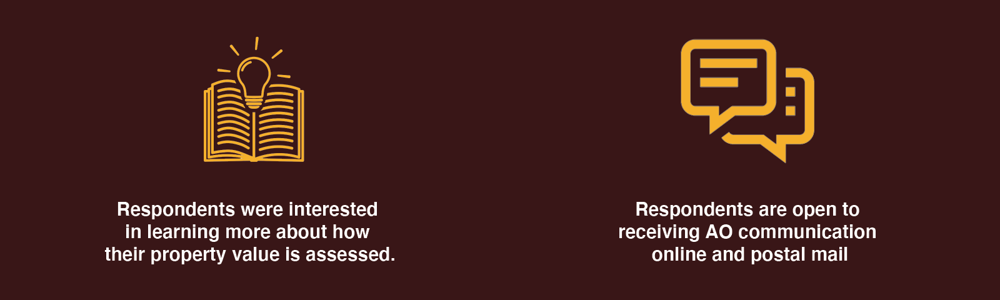

City of Lansing Assessor
Collecting more property information for assessments
Duration: 4 months
Team: 4 members (PM, Industrial Designer, Social Worker, and UXD/R)
Role: UX Designer and Researcher
Tools: Miro, Illustrator, Photoshop
Problem: The State of Michigan recommends that 18% of property units are reviewed each year. In the City of Lansing, that is about 45,000 housing units, which is more than the small staff of the Assessing Office (AO) can handle.
Solution: We designed a doorhanger that acts as a base for an information tool for citizens to engage with AO.
My Contribution: I led the affinity wall session, initial iteration of the doorhanger, and design of the interactive calendar. I also assisted with the AO interviews, and developing the personas.
In an effort to understand AO staff and Lansing property goals and needs, our team conducted qualitative semi-structured interviews with AO stakeholders. We interviewed the City Assessor, the Deputy City Assessor, all of the three Property Assessors, and one of the Board of Appeals member from the AO. Our goal was to help inform our understanding of their work activities, goals, and issues they encounter in support of the AO’s mission to collect and assess property values in Lansing. It turned out that their frustrations stemmed from three aspects:
A combination of property assessor bandwidth, property owner engagement and education, and access to property information amount to less than ideal representative sample of properties assessed in Lansing. The problems that the AO faces endangers the accuracy of property value and property tax estimates in Lansing which can lead to disgruntled citizens and government officials alike.
We then mapped out their workflow process to better understand and visualize the flow of information.
Our observations were that assessors would rarely go inside a property due to safety reasons. Majority of the dialogue that is established when a resident isn’t at home was either through calling the AO, or physically visiting them.
In our efforts to understand the engagement levels and practices from the citizen’s perspective, the Citizen Engagement Survey was broadcasted through Lansing’s social media pages and made physically available at the AO for any interested walk-in visitors. Our survey findings were:

After our interviews and survey, we realized that the scope of the problem was extremely complex as there were multiple moving parts. I advocated for conducting an affinity mapping session as a group first before diving into finding a solution, to identify key themes from our qualitative and quantitative data.

Consequently, after analyzing the affinity mapping results, we collectively created the following personas to help us guide our design.

Due to the scope and the timeframe of our project, our solution primarily focuses on residential homeowners who we discovered most likely to be disengaged or not well educated on the assessment details and processes. Our solution should also take into the difficulty property appraisers experience scheduling property visits, and receiving invitations to inspect the inside of homes. Lastly, our solution should consider the existing human capital and technology resources that the AO offices has at their disposal.
As a group, we conducted a design-studio-style workshop to brainstorm potential solutions. Group members were given two 10-minute sessions to sketch out as many ideas as possible. We then each presented our ideas, grouped similar ideas on the whiteboard, and offered critique to each other's ideas.
After comparing solutions and prototypes, we collectively agreed on our first design iteration as our base after some testing. From the current viable infrastructure, I designed a simple doorhanger to be built upon the idea of implementing a low-tech solution and incorporating the client’s current practices of leaving notices on property owner’s doors. In this first iteration, the doorhanger has a survey about their property information that the residents can mail at their own convenience.
Intial Lo-fi Concept
Iteration 1 - Hi-fi concept
After testing our idea, we then added some more functionality to the doorhanger. We added a QR code that could be scanned from a citizen’s phone which would lead to a digitalized version of the survey on the doorhanger for those who tend to be more tech savvy. The survey would be hosted on the AO’s website and linked through Google Forms while being tracked with analytics.
Iteration 3 - Contact Card
From our interviews we discovered that assessors would write down their contact information on the notices they would leave behind to personalize their outreach, as some residents were intimidated by the official government notice. We decided to add a detachable business card onto the doorhanger for residents to contact the AO to standardize their practice.
From our analysis for our Citizen Engagement Survey, we wanted to empower citizens on educating them on the assessing processing. We developed an interactive timeline that provides an overview of annual assessing tasks and allows users to add deadlines for some events to their e-calendar. Currently, property owners need to scour through multiple web pages and pdf documents to learn about important deadlines and property assessment information. This tool distills and organizes that information in an easy to consume format. The timeline would sit on the same location as the virtual survey on the AO website.
Initial concept
Mobile & print friendly concept
Iteration 4 – Final deliverable
After presenting our 3rd iteration to the AO, we discovered that the City of Lansing was undergoing a new design for their logo. We incorporated their new features and colors onto our final deliverable. In addition we updated to a more sleeker shape with rounded corners, as well as adding advertising space that could fund the operations.
On November 21st 2019, our team presented our design, at the Citizen Interaction Design 2019 Exposition in the City of Lansing at the Capital Area District Library. The event was open to all residents of Lansing as well as government officials, who would rank and judge our final deliverable presentation. Our team received the highest reviews amongst all the other teams presenting, and won the exposition.
Thank you for taking the time to read through this case study! As a token of my appreciation, here's a little reward :)